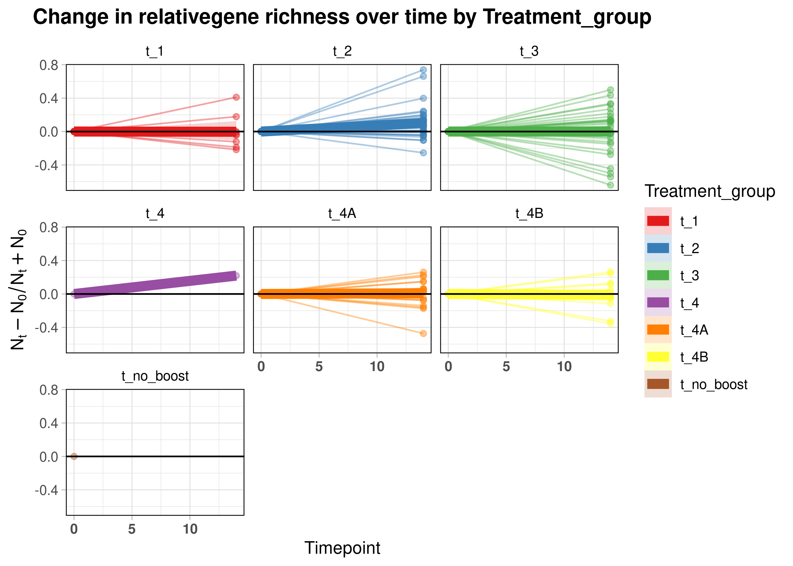

CHIR HIV RV306 Vaginal - AIDSVax Effect
Oriol Careta Borràs
2024-04-10
Last updated: 2024-04-10
Checks: 5 2
Knit directory:
2024_chir_hiv_rv306_vaginal/
This reproducible R Markdown analysis was created with workflowr (version 1.7.1). The Checks tab describes the reproducibility checks that were applied when the results were created. The Past versions tab lists the development history.
The R Markdown is untracked by Git. To know which version of the R
Markdown file created these results, you’ll want to first commit it to
the Git repo. If you’re still working on the analysis, you can ignore
this warning. When you’re finished, you can run
wflow_publish to commit the R Markdown file and build the
HTML.
Great job! The global environment was empty. Objects defined in the global environment can affect the analysis in your R Markdown file in unknown ways. For reproduciblity it’s best to always run the code in an empty environment.
The command set.seed(20240321) was run prior to running
the code in the R Markdown file. Setting a seed ensures that any results
that rely on randomness, e.g. subsampling or permutations, are
reproducible.
Great job! Recording the operating system, R version, and package versions is critical for reproducibility.
- adonis_table
- gene_richness
- hierarchical_clustering
- load_data
- lon_gene_richness
- nmds_groups
- PCoA
- pred_taxa
- rarefraction_plots
- run_ancom
- run_lefse
- session-info-chunk-inserted-by-workflowr
- top50_abundance_barplot
To ensure reproducibility of the results, delete the cache directory
103_AIDSVax_effect_cache and re-run the analysis. To have
workflowr automatically delete the cache directory prior to building the
file, set delete_cache = TRUE when running
wflow_build() or wflow_publish().
Great job! Using relative paths to the files within your workflowr project makes it easier to run your code on other machines.
Great! You are using Git for version control. Tracking code development and connecting the code version to the results is critical for reproducibility.
The results in this page were generated with repository version 412fedd. See the Past versions tab to see a history of the changes made to the R Markdown and HTML files.
Note that you need to be careful to ensure that all relevant files for
the analysis have been committed to Git prior to generating the results
(you can use wflow_publish or
wflow_git_commit). workflowr only checks the R Markdown
file, but you know if there are other scripts or data files that it
depends on. Below is the status of the Git repository when the results
were generated:
Ignored files:
Ignored: .Rhistory
Ignored: .Rproj.user/
Ignored: analysis/009_quality_control_cache/
Ignored: analysis/100_global_description_cache/
Ignored: analysis/101_baseline_timepoints_cache/
Ignored: analysis/102_baseline_description_cache/
Ignored: analysis/103_AIDSVax_effect_cache/
Ignored: analysis/104_groups_comparison_cache/
Ignored: analysis/105_longitudinal_study_cache/
Ignored: analysis/105_longitudinal_sudy_t1_cache/
Ignored: analysis/105_longitudinal_sudy_t2_cache/
Ignored: analysis/105_longitudinal_sudy_t3_cache/
Ignored: analysis/105_longitudinal_sudy_t4A_cache/
Ignored: analysis/105_longitudinal_sudy_t4B_cache/
Ignored: analysis/Study_1.png
Ignored: analysis/Study_2.png
Ignored: analysis/Study_3.png
Ignored: analysis/Study_4A.png
Ignored: analysis/Study_4B.png
Ignored: code/.RData
Ignored: code/.Rhistory
Untracked files:
Untracked: analysis/004_throughput_analysis.Rmd
Untracked: analysis/005_mre_initialization.Rmd
Untracked: analysis/007_phylosmith_abundance.Rmd
Untracked: analysis/008_phylosmith_diversity.Rmd
Untracked: analysis/009_quality_control.Rmd
Untracked: analysis/100_global_description.Rmd
Untracked: analysis/101_baseline_timepoints.Rmd
Untracked: analysis/102_baseline_description.Rmd
Untracked: analysis/103_AIDSVax_effect.Rmd
Untracked: analysis/104_groups_comparison.Rmd
Untracked: analysis/105_longitudinal_sudy_t1.Rmd
Untracked: analysis/105_longitudinal_sudy_t2.Rmd
Untracked: analysis/105_longitudinal_sudy_t3.Rmd
Untracked: analysis/105_longitudinal_sudy_t4A.Rmd
Untracked: analysis/105_longitudinal_sudy_t4B.Rmd
Untracked: analysis/Study.jpg
Untracked: code/000_s3_bucket_initialization.Rmd
Untracked: code/001_metadata_check.Rmd
Untracked: code/002_datatransfer.Rmd
Untracked: code/003_metadata_vars_selection.Rmd
Untracked: code/006_populate_mre.Rmd
Untracked: data/RV306_CVM_2022_11_08_lims.xlsx
Untracked: data/RV306_CVM_ShippingManifest_2022_SB_clinical.xlsx
Untracked: data/preprocessed/
Unstaged changes:
Modified: analysis/_site.yml
Modified: analysis/about.Rmd
Modified: analysis/index.Rmd
Note that any generated files, e.g. HTML, png, CSS, etc., are not included in this status report because it is ok for generated content to have uncommitted changes.
There are no past versions. Publish this analysis with
wflow_publish() to start tracking its development.
Introduction
We are interested in comparing samples of time-points 0, and 14 in terms of microbiome composition and function to answer the question how does the application of AIDSVax affect microbiome composition?.
MRE initialization and filter baseline samples
mre <- readr::read_rds(here::here("data", "preprocessed", "mre_vaginotype.rds"))
## mre init & filter
mre <-
metar::get_meta(mre) %>%
dplyr::filter(Timepoint %in% c(0, 14)) %>%
dplyr::pull(SampleID) %>%
metar::filter_samples(mre, sample_ids = .)
mre#> MetarSet-class experimental-level object
#> [MetadataSet ]: 231 samples and 9 variables
#> [DiversitySet ]:
#> ✖ igc: 0 observations and 0 samples
#> ✔ virgo: 7109 observations and 231 samples
#> ✖ dada2: 0 observations and 0 samples
#> [TaxaSet ]:
#> ✖ metaphlan: no phyloseq object available
#> ✖ kraken: no phyloseq object available
#> ✖ bracken: no phyloseq object available
#> ✖ motus: no phyloseq object available
#> ✔ virgo: phyloseq object with 255 taxa and 231 samples
#> ✖ dada2: no phyloseq object available
#> [GeneFunctionSet ]:
#> ✖ humann: no functional data aviable
#> ✖ igc: no functional data aviable
#> ✔ virgo: 4333 kegg_id, 0 cog_id, 0 eggnog_id, 0 ec_id and 0 metacyc_id
#> ✖ fmap: no functional data aviable
#> ✖ picrust2: no functional data aviable
#> ✖ tax4fun: no functional data aviable
#> ✖ phylolisft: no functional data aviableThere are 231 samples from 118 patients which were collected at time-points 0 and 14.
Gene richness - Rarefaction
Note that diversity analysis here are delicate to perform due to the limitations in sampling.
From the taxonomic composition we’ll derive some alpha-diversity ecological indices and compare them among groups.
We also want to use the VIRGO catalog mapping-derived gene richness. However, this can be problematic for gene richness since the initial reads per sample is very low in some cases. This low numbers may be enough to describe the taxonomic composition, specially if the microbiome is “simple”, but may fail to capture richness/diversity.
## run rarefaction
mre <- metar::virgo_rarefaction(mre, save_files = FALSE)
## plot rarefaction
metar::get_cat(mre) %>%
dplyr::pull(1) %>%
purrr::walk(~ {
cat('\n\n### `', .x, '`\n\n')
metar::get_diversity(mre, type = "virgo", res_slot = "rarefaction") %>%
purrr::pluck("categorical", .x, "rarefaction") %>%
plot()
})Treatment_group
Arm
Heme_test
Medical_center
pass_reads_quantile
vaginotype
vaginotype_condition
The rarefraction curves (used to present relationship between gene richness and sequencing depth) show no apparent difference between groups in terms of diversity. Of note, rarefaction curve shows how far we are from asymptotically saturating richness signal from this catalog at the sampling depth we have (after filtering human sequences). Thus, we need to be aware of the limitations of gene richness analysis and interpret with caution. Of note, samples enriched in G. Vaginalis (and thus, with a vaginosis profile) seem to have a higher sample depth and gene richness compared to the other ones.
Gene richness - Boxplots
## plot gene richness
metar::get_cat(mre) %>%
dplyr::pull(1) %>%
purrr::walk(~ {
cat('\n\n### `', .x, '`\n\n')
metar::get_diversity(mre, type = "virgo", res_slot = "rarefaction") %>%
purrr::pluck("categorical", .x, "boxplots", "GeneNumber") %>%
plot()
})Treatment_group
Arm
Heme_test
Medical_center
pass_reads_quantile
vaginotype
vaginotype_condition

The gene richness boxplots indicate that there are no significant differences between groups in terms of gene richness, except when separating by the number of QPass reads by quantiles, where the gene richness on the 4th quantile group is significantly higher. This could be explained due to the fact that the sample depth is higher on this group which favors gene richness. There are also significant differences between vaginotype groups. Ther also differences in gene richness when comparing vaginotype groups.
Alpha Diversity - Longitudinal
To further explore the aforementioned observations, we will verify whether gene diversity varies across timepoints for the categorical variables.
metar::get_cat(mre) %>%
dplyr::pull(1) %>%
purrr::walk(~ {
cat('\n\n### `', .x, '`\n\n')
metar::get_diversity(mre, type = "virgo", res_slot = "rarefaction") %>%
purrr::pluck("longitudinal_rel", "categorical", .x) %>%
plot()
})Treatment_group

Arm
Heme_test
Medical_center
pass_reads_quantile
vaginotype
vaginotype_condition

In these graphs, we can see the changes in the relative gene richness over time of samples separated by categorical variable groups. It seems that microbiome stability is higher in the placebo arm compared to the active arm.
PCoA based on Bray Curtis
ps <- metar::get_phyloseq(mre, type = "virgo")
ps_RA <- phyloseq::transform_sample_counts(ps, function(x) x / sum(x))
bray_pcoa <-
phyloseq::ordinate(physeq = ps_RA, method = "PCoA", distance = "bray")
create_pcoa_plot <- function(ordination_obj, title, a, b) {
plot <- phyloseq::plot_ordination(
physeq = ps_RA,
ordination = ordination_obj,
color = "vaginotype",
shape = "Arm",
axes = c(a,b)
) +
geom_point(size = 2.5) +
scale_color_manual(values = c("deeppink4", "coral", "cadetblue4")) +
scale_shape_manual(values = c(16, 2)) +
theme_light() +
ggtitle(title)
return(plot)
}
pcoa_plot_PCo1_PCo2 <- create_pcoa_plot(bray_pcoa, "PCo1 vs PCo2", 1, 2)
pcoa_plot_PCo1_PCo3 <- create_pcoa_plot(bray_pcoa, "PCo1 vs PCo3", 1, 3)
pcoa_plot_PCo2_PCo3 <- create_pcoa_plot(bray_pcoa, "PCo2 vs PCo3", 2, 3)
gridExtra::grid.arrange(pcoa_plot_PCo1_PCo2, pcoa_plot_PCo1_PCo3, pcoa_plot_PCo2_PCo3, nrow = 1)In the PCoA plots, it can be seen that the compositional variables that affect each cluster. PCo 1 and 2 explain the 84.7% of the variability (48.6% and 36.1% respectively), while PCo3 only explains the 5.4% of the variability. From the plots we can see that PCo1 is the one that explains the separation of cluster 1 (L. Crispatus) and cluster 3 (L. Iners) from cluster 2 (G. Vaginalis), while PCo2 explains the separation of cluster 2 and 3 from cluster 1. On the other hand, PCo3 is not useful to discriminate between clusters. It can also be seen that
Beta-Diversity - Species Composition
Let’s visualize composition at the species level using barplots.
## run barplots
mre <- metar::virgo_barplots(mre, top_n = 50, save_files = FALSE)
## Plot virgo barplots
mre %>%
metar::get_taxa("virgo", "barplots") %>%
purrr::pluck("ta1", "top_50", "rel_abundance", "bray_NMDS1_order_barplot") +
theme(axis.text.x = element_blank())The clustering barplots depicting taxonomic diversity per sample reveal the presence of three distinct groups:
- The first group is primarily characterized by the dominance of Gardnerella vaginalis, occasionally accompanied by co-dominance with Atopobium vaginae. Notably, this group exhibits a higher level of taxonomic diversity compared to the other two groups. Both Gardnerella vaginalis, a gram-negative facultative anaerobic bacterium, and Atopobium vaginae, a gram-positive strict anaerobic bacterium, have been associated with bacterial vaginosis (BV) and its characteristic symptoms.
- The second group, is characterized by a strong dominance of Lactobacillus iners. Lactobacillus iners is a common bacterium found in the vaginal microbiota, playing a vital role in maintaining vaginal health. It helps to maintain an acidic pH, creating an unfavorable environment for harmful microorganisms. Lactobacillus iners contributes to the stability and balance of the vaginal microbiota, promoting overall vaginal health and potentially protecting against infections like bacterial vaginosis.
- The third group is mainly characterized by a dominant presence of Lactobacillus crispatus, although some samples in this group also show high levels of Lactobacillus iners. Lactobacillus crispatus is a beneficial bacterium commonly found in the vaginal microbiota. It helps maintain a healthy vaginal environment by producing lactic acid and supporting acidity. Some samples also have some codominance of Lactobacillus jensenii. Lactobacillus jensenii is a gram-positive bacterium commonly found in the vaginal microbiota, particularly in women of reproductive age. It contributes to maintaining vaginal health by producing lactic acid and creating an acidic environment, which helps inhibit the growth of harmful bacteria. Lactobacillus jensenii is known for its ability to adhere to vaginal epithelial cells, which may enhance its protective effects against infections and maintain the balance of the vaginal microbiota.
## Count of two predominant taxas per sample
mre %>%
metar::get_taxa("virgo", "barplots") %>%
purrr::pluck("ta1", "top_50", "rel_abundance", "bray_NMDS1_order_barplot", "data") %>%
dplyr::group_by(SampleID) %>%
dplyr::slice_max(Abundance, n = 2) %>%
dplyr::ungroup() %>%
dplyr::count(Species, sort = TRUE)#> # A tibble: 20 × 2
#> Species n
#> <fct> <int>
#> 1 Lactobacillus_iners 119
#> 2 Gardnerella_vaginalis 108
#> 3 Lactobacillus_crispatus 100
#> 4 Atopobium_vaginae 52
#> 5 Lactobacillus_jensenii 36
#> 6 Lactobacillus_gasseri 8
#> 7 BVAB1 7
#> 8 Prevotella_amnii 7
#> 9 Prevotella_bivia 5
#> 10 Streptococcus_anginosus 4
#> 11 Streptococcus_agalactiae 3
#> 12 Lactobacillus_johnsonii 2
#> 13 Streptococcus_urinalis 2
#> 14 Prevotella_timonensis 2
#> 15 Mobiluncus_mulieris 2
#> 16 Ureaplasma_urealyticum 1
#> 17 Staphylococcus_epidermidis 1
#> 18 Corynebacterium_aurimucosum 1
#> 19 Prevotella_buccalis 1
#> 20 Lactobacillus_kefiranofaciens 1In this table, we can see the to most dominant species of each sample summed up. It can be seen that the most abundant species are Gardnerella vaginalis, Lactobacillus iners and Lactobacillus crispatus, followed by Atopobium vaginae, which on the abundance barplot was found in codominance with Gardnerella vaginalis on some samples.
Beta-Diversity - Cluestering
In the previous barplots, the x-axis is defined according to ward.D2, bray-based clustering. We’ll now transform abundances and project them into a heatmap, to be able to visualize association with variables of interes.
## run heatmap
mre <- metar::virgo_heatmap(mre, top_n = 50, save_files = FALSE)
## plot heatmap
library(ComplexHeatmap)
mre %>%
metar::get_taxa("virgo", "heatmaps") %>%
purrr::pluck("ta1", "top_50") %>%
ComplexHeatmap::draw(heatmap_legend_side = "left", annotation_legend_side = "bottom")In this hierarchical clustering, we can clearly see the three groups, but no clear associations with any categorical variable can be observed. Moreover, these groups are also associated with the vaginosis variable.
Beta Diversity - NMDS
NMDS (Non-metric Multidimensional Scaling) analysis is a commonly used non-metric ordination technique that helps visualize the similarity or dissimilarity between samples based on a distance or similarity matrix. In the context of microbiome data, this technique is particularly useful for identifying patterns and significant changes in microbiome composition among different samples or groups.
mre <- metar::virgo_nmds(mre, top_n = 50, save_files = FALSE)
metar::get_taxa(mre, "virgo", "nmds") %>%
purrr::pluck("ta1", "top_50", "all_adonis") %>%
dplyr::arrange(Pr..F.)#> # A tibble: 9 × 6
#> id Df SumOfSqs R2 F Pr..F.
#> <chr> <dbl> <dbl> <dbl> <dbl> <dbl>
#> 1 pass_reads_quantile 3 16.5 0.200 18.9 0.001
#> 2 vaginotype 2 38.0 0.459 96.9 0.001
#> 3 vaginotype_condition 1 22.5 0.272 85.6 0.001
#> 4 cluster 2 37.9 0.459 96.7 0.001
#> 5 Treatment_group 6 3.14 0.0379 1.47 0.022
#> 6 Medical_center 1 0.606 0.00733 1.69 0.12
#> 7 Heme_test 1 0.531 0.00643 1.48 0.169
#> 8 Arm 1 0.446 0.00540 1.24 0.258
#> 9 Timepoint 1 0.156 0.00188 0.432 0.873The Adonis test indicates that there are significant differences in the taxonomic composition between the levels of the categorical variables: pass_reads_quantile, vaginotype, and vaginotype_condition, but not on the categorical variable Treatment_group.
metar::get_cat(mre) %>%
dplyr::pull(1) %>%
purrr::walk( ~ {
cat('\n\n### `', .x, '`\n\n')
metar::get_taxa(mre, "virgo", "nmds") %>%
purrr::pluck("ta1", "top_50", "categorical", .x) %>%
plot()
})Treatment_group
Arm
Heme_test
Medical_center
pass_reads_quantile
vaginotype
vaginotype_condition

The nmds plots also indicate that there are significant differences between the levels of the categorical variables: pass_reads_quantile, vaginotype, and vaginotype_condition, but not on the categorical variable Treatment_group.
Differential Analyisis ANCOM
# run ancom
mre <- metar::virgo_ancom(mre, save_files = FALSE)
# plot ancom
metar::get_cat(mre) %>%
dplyr::pull(1) %>%
purrr::walk( ~ {
plt <- metar::get_taxa(mre, "virgo", "ancom") %>%
purrr::pluck("ta1", .x, "plot")
if (!is.null(plt)) {
cat('\n\n### `', .x, '`\n\n')
plot(plt)
}
})Treatment_group
Arm
Heme_test
Medical_center
pass_reads_quantile
vaginotype
vaginotype_condition
ANCOM is a statistical method designed specifically for the compositional analysis of microbiome data. It’s used when you have microbiome abundance data and want to identify features that are differentially abundant across different groups or conditions.
W Statistic: In ANCOM, the “W statistic” is a measure used to assess the significance of differential abundance for each feature (taxa or OTUs). The W statistic measures how many times the abundance of a particular feature is significantly different from the abundance expected by chance across the groups being compared.
CLR (Centered Log-Ratio) Mean Difference: The CLR mean difference represents the mean difference in the log-ratio transformed abundances of a feature between two groups. The log-ratio transformation is applied to the relative abundances of features to handle compositional data properly. The mean difference indicates the average change in abundance of a feature between the groups after applying the log-ratio transformation.
In conclusion, when using ANCOM with a categorical variable, the W statistic helps identify significant differences in feature abundance across groups, while the CLR mean difference provides additional insight into the direction and magnitude of these differences after applying the log-ratio transformation.
Features with high W statistic values are considered significantly differentially abundant between groups. The CLR mean difference helps to understand the direction and magnitude of the difference in abundance between groups after transformation.
Thus, these plots indicate us that there are abundance values that are significantly different between pass_reads_quantile, vaginotype and vaginotype_condition groups, but not between Treatment_group groups. Regarding pass_reads_quantile, these differences are bigger when comparing c_4 group against others (but do not occur on c_1 vs c_2 or c_1 vs c_3 and c_2 vs c_3), and regarding vaginotype, these differences are bigger when comparing L. Crispatus and G. Vaginalis groups.
Differential Analyisis Lefse
# run lefse
mre <- metar::virgo_lefse(mre, save_files = FALSE)
# plot lefse
metar::get_cat(mre) %>%
dplyr::pull(1) %>%
purrr::walk(~ {
plt <- metar::get_taxa(mre, "virgo", "lefse") %>%
purrr::pluck("ta1", .x, "plot")
if (!is.null(plt)) {
cat('\n\n### `', .x, '`\n\n')
plot(plt)
}
})Treatment_group
Medical_center
pass_reads_quantile
vaginotype
vaginotype_condition
LEfSe is a method used for identifying features that are differentially abundant between two or more biological classes. It combines the statistical rigor of linear discriminant analysis (LDA) with the biological relevance of effect size estimation.
reorder(names, scores): In the context of LEfSe results, the “reorder(names, scores)” refers to the reordering of the features based on their scores. The scores represent the effect size of each feature in discriminating between the biological classes. By reordering the features based on their scores, you can visually prioritize the most discriminative features.
LDA score (log10): The LDA score represents the effect size of a feature in discriminating between the biological classes. It’s calculated based on the combination of mean differences and standard deviations of feature abundances between classes, as assessed by linear discriminant analysis (LDA). The log10 transformation of the LDA score is often used to make the distribution of scores more symmetric and easier to interpret.
In conclusion, when using LEfSe results with a categorical variable, reordering features based on their LDA scores and visualizing them using log10-transformed scores can help prioritize and interpret the most discriminative features associated with the biological classes.
Features with higher LDA scores (either positive or negative) are considered more discriminative between the biological classes. By sorting and visualizing the features based on their LDA scores, you can identify the most biologically relevant and statistically significant features associated with the categorical variable of interest.
If we consider features with LDA scores above 3 as biologically relevant, these plots indicate us that Lactobacillus Iners, Lactobacillus Crispatus and Gardnerella Vaginalis are the species that explain the difference between healthy and vaginosis groups.
Conclusions
After performing all these tests, we can conclude that there are no differences between treatment groups or between study arms at time-points 0, and 14. This means that there are no differences in terms of microbiome composition between the application of ALVAC or in combination with AIDSVax
sessionInfo()#> R version 4.1.2 (2021-11-01)
#> Platform: x86_64-pc-linux-gnu (64-bit)
#> Running under: Ubuntu 22.04.4 LTS
#>
#> Matrix products: default
#> BLAS: /usr/lib/x86_64-linux-gnu/blas/libblas.so.3.10.0
#> LAPACK: /usr/lib/x86_64-linux-gnu/lapack/liblapack.so.3.10.0
#>
#> locale:
#> [1] LC_CTYPE=en_US.UTF-8 LC_NUMERIC=C
#> [3] LC_TIME=es_ES.UTF-8 LC_COLLATE=en_US.UTF-8
#> [5] LC_MONETARY=es_ES.UTF-8 LC_MESSAGES=en_US.UTF-8
#> [7] LC_PAPER=es_ES.UTF-8 LC_NAME=C
#> [9] LC_ADDRESS=C LC_TELEPHONE=C
#> [11] LC_MEASUREMENT=es_ES.UTF-8 LC_IDENTIFICATION=C
#>
#> attached base packages:
#> [1] grid stats graphics grDevices utils datasets methods
#> [8] base
#>
#> other attached packages:
#> [1] ComplexHeatmap_2.18.0 ggplot2_3.5.0 magrittr_2.0.3
#> [4] workflowr_1.7.1
#>
#> loaded via a namespace (and not attached):
#> [1] tidyr_1.3.1 knitr_1.45
#> [3] multcomp_1.4-25 DelayedArray_0.20.0
#> [5] wesanderson_0.3.7 data.table_1.15.4
#> [7] rpart_4.1.23 RCurl_1.98-1.14
#> [9] doParallel_1.0.17 generics_0.1.3
#> [11] BiocGenerics_0.40.0 TH.data_1.1-2
#> [13] callr_3.7.6 metar_0.1.5
#> [15] future_1.33.1 correlation_0.8.4
#> [17] tzdb_0.4.0 bayesm_3.1-6
#> [19] lubridate_1.9.3 httpuv_1.6.14
#> [21] SummarizedExperiment_1.24.0 xfun_0.43
#> [23] hms_1.1.3 jquerylib_0.1.4
#> [25] evaluate_0.23 promises_1.2.1
#> [27] DEoptimR_1.1-3 fansi_1.0.6
#> [29] caTools_1.18.2 igraph_2.0.3
#> [31] htmlwidgets_1.6.4 tensorA_0.36.2.1
#> [33] kSamples_1.2-10 stats4_4.1.2
#> [35] Rmpfr_0.9-5 paletteer_1.6.0
#> [37] purrr_1.0.2 dplyr_1.1.4
#> [39] survcomp_1.44.1 ggpubr_0.6.0
#> [41] backports_1.4.1 insight_0.19.8
#> [43] permute_0.9-7 prismatic_1.1.1
#> [45] compositions_2.0-8 libcoin_1.0-10
#> [47] MatrixGenerics_1.6.0 vctrs_0.6.5
#> [49] Biobase_2.54.0 here_1.0.1
#> [51] ggmosaic_0.3.3 abind_1.4-5
#> [53] cachem_1.0.8 withr_3.0.0
#> [55] ggforce_0.4.2 robustbase_0.99-2
#> [57] checkmate_2.3.1 vegan_2.6-4
#> [59] cluster_2.1.6 ape_5.7-1
#> [61] lazyeval_0.2.2 crayon_1.5.2
#> [63] pkgconfig_2.0.3 SuppDists_1.1-9.7
#> [65] labeling_0.4.3 tweenr_2.0.3
#> [67] GenomeInfoDb_1.30.1 nlme_3.1-164
#> [69] statsExpressions_1.5.3 nnet_7.3-19
#> [71] rlang_1.1.3 globals_0.16.2
#> [73] lifecycle_1.0.4 sandwich_3.1-0
#> [75] survivalROC_1.0.3.1 phyloseq_1.38.0
#> [77] rprojroot_2.0.4 polyclip_1.10-6
#> [79] matrixStats_1.2.0 datawizard_0.9.1
#> [81] Matrix_1.6-5 carData_3.0-5
#> [83] zoo_1.8-12 Rhdf5lib_1.16.0
#> [85] boot_1.3-30 base64enc_0.1-3
#> [87] whisker_0.4.1 GlobalOptions_0.1.2
#> [89] processx_3.8.4 png_0.1-8
#> [91] viridisLite_0.4.2 rjson_0.2.21
#> [93] PMCMRplus_1.9.10 bootstrap_2019.6
#> [95] parameters_0.21.5 bitops_1.0-7
#> [97] getPass_0.2-4 KernSmooth_2.23-22
#> [99] rhdf5filters_1.6.0 Biostrings_2.62.0
#> [101] shape_1.4.6.1 stringr_1.5.1
#> [103] multcompView_0.1-9 coin_1.4-3
#> [105] parallelly_1.37.1 lefser_1.4.0
#> [107] readr_2.1.5 rstatix_0.7.2
#> [109] S4Vectors_0.32.4 ggsignif_0.6.4
#> [111] rmeta_3.0 scales_1.3.0
#> [113] memoise_2.0.1 plyr_1.8.9
#> [115] gplots_3.1.3.1 zlibbioc_1.40.0
#> [117] compiler_4.1.2 RColorBrewer_1.1-3
#> [119] clue_0.3-65 snakecase_0.11.1
#> [121] cli_3.6.2 ade4_1.7-22
#> [123] XVector_0.34.0 listenv_0.9.1
#> [125] patchwork_1.2.0 ps_1.7.6
#> [127] htmlTable_2.4.2 Formula_1.2-5
#> [129] MASS_7.3-60.0.1 mgcv_1.9-1
#> [131] ggside_0.3.1 tidyselect_1.2.1
#> [133] stringi_1.8.3 forcats_1.0.0
#> [135] highr_0.10 yaml_2.3.8
#> [137] ANCOM_2.2 ggrepel_0.9.5
#> [139] sass_0.4.9 tools_4.1.2
#> [141] timechange_0.3.0 future.apply_1.11.1
#> [143] parallel_4.1.2 circlize_0.4.16
#> [145] rstudioapi_0.15.0 foreach_1.5.2
#> [147] foreign_0.8-86 git2r_0.33.0
#> [149] janitor_2.2.0 gridExtra_2.3
#> [151] prodlim_2023.08.28 farver_2.1.1
#> [153] digest_0.6.35 lava_1.8.0
#> [155] BWStest_0.2.3 Rcpp_1.0.12
#> [157] GenomicRanges_1.46.1 car_3.1-2
#> [159] broom_1.0.5 performance_0.10.9
#> [161] later_1.3.2 httr_1.4.7
#> [163] effectsize_0.8.6 colorspace_2.1-0
#> [165] fs_1.6.3 IRanges_2.28.0
#> [167] splines_4.1.2 rematch2_2.1.2
#> [169] multtest_2.50.0 plotly_4.10.4
#> [171] gmp_0.7-4 jsonlite_1.8.8
#> [173] zeallot_0.1.0 modeltools_0.2-23
#> [175] R6_2.5.1 Hmisc_5.1-1
#> [177] pillar_1.9.0 htmltools_0.5.8
#> [179] glue_1.7.0 fastmap_1.1.1
#> [181] codetools_0.2-19 mvtnorm_1.2-4
#> [183] utf8_1.2.4 lattice_0.22-5
#> [185] bslib_0.7.0 tibble_3.2.1
#> [187] logger_0.3.0 gtools_3.9.5
#> [189] survival_3.5-8 rmarkdown_2.26
#> [191] biomformat_1.22.0 munsell_0.5.1
#> [193] GetoptLong_1.0.5 rhdf5_2.38.1
#> [195] GenomeInfoDbData_1.2.7 iterators_1.0.14
#> [197] ggstatsplot_0.12.2 reshape2_1.4.4
#> [199] gtable_0.3.4 bayestestR_0.13.2